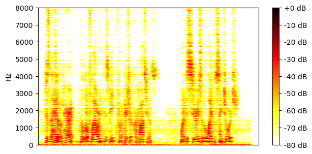

Reverberant Libri2Mix clean test set
| Mixture |

|
|||
|---|---|---|---|---|
| Ground-truth sources |

SI-SNR = -7.42 dB |
SI-SNR = 7.11 dB |

SI-SNR = -81.38 dB |

SI-SNR = -81.38 dB |
| Method | Separated source 0 | Separated source 1 | Separated source 2 | Separated source 3 |
| Supervised 2-source mixtures |
SI-SNR = 6.15 dB |
SI-SNR = 13.87 dB |
SI-SNR = -50.83 dB |

SI-SNR = -51.37 dB |
| Unsupervised 2-source mixtures |

SI-SNR = 5.65 dB |
SI-SNR = 14.13 dB |

SI-SNR = -50.55 dB |

SI-SNR = -55.03 dB |
| Supervised 1-or-2-source mixtures |
SI-SNR = 6.11 dB |
SI-SNR = 14.08 dB |

SI-SNR = -47.61 dB |

SI-SNR = -48.03 dB |
| Unsupervised 1-or-2-source mixtures |
SI-SNR = 7.03 dB |

SI-SNR = 14.59 dB |

SI-SNR = -46.27 dB |
SI-SNR = -55.26 dB |
| Mixture |

|
|||
|---|---|---|---|---|
| Ground-truth sources |
SI-SNR = -2.86 dB |

SI-SNR = 2.73 dB |

SI-SNR = -75.25 dB |

SI-SNR = -75.25 dB |
| Method | Separated source 0 | Separated source 1 | Separated source 2 | Separated source 3 |
| Supervised 2-source mixtures |
SI-SNR = 9.44 dB |

SI-SNR = 2.58 dB |

SI-SNR = -47.66 dB |
SI-SNR = -68.02 dB |
| Unsupervised 2-source mixtures |

SI-SNR = 8.38 dB |

SI-SNR = 13.65 dB |
SI-SNR = -43.62 dB |

SI-SNR = -57.76 dB |
| Supervised 1-or-2-source mixtures |
SI-SNR = 11.08 dB |
SI-SNR = 14.15 dB |

SI-SNR = -42.89 dB |

SI-SNR = -42.97 dB |
| Unsupervised 1-or-2-source mixtures |
SI-SNR = 12.02 dB |

SI-SNR = 15.10 dB |

SI-SNR = -42.21 dB |

SI-SNR = -43.95 dB |
| Mixture |

|
|||
|---|---|---|---|---|
| Ground-truth sources |
SI-SNR = 5.15 dB |
SI-SNR = -4.80 dB |

SI-SNR = -85.28 dB |

SI-SNR = -85.28 dB |
| Method | Separated source 0 | Separated source 1 | Separated source 2 | Separated source 3 |
| Supervised 2-source mixtures |
SI-SNR = 15.70 dB |
SI-SNR = 10.34 dB |

SI-SNR = -52.05 dB |
SI-SNR = -54.58 dB |
| Unsupervised 2-source mixtures |

SI-SNR = 16.29 dB |
SI-SNR = 11.01 dB |
SI-SNR = -50.94 dB |

SI-SNR = -52.56 dB |
| Supervised 1-or-2-source mixtures |
SI-SNR = 16.18 dB |

SI-SNR = 10.90 dB |

SI-SNR = -49.80 dB |

SI-SNR = -50.41 dB |
| Unsupervised 1-or-2-source mixtures |
SI-SNR = 17.24 dB |

SI-SNR = 12.14 dB |
SI-SNR = -48.18 dB |
SI-SNR = -51.11 dB |
| Mixture |

|
|||
|---|---|---|---|---|
| Ground-truth sources |

SI-SNR = 2.42 dB |

SI-SNR = -2.46 dB |

SI-SNR = -84.59 dB |

SI-SNR = -84.59 dB |
| Method | Separated source 0 | Separated source 1 | Separated source 2 | Separated source 3 |
| Supervised 2-source mixtures |

SI-SNR = -5.86 dB |

SI-SNR = -8.95 dB |

SI-SNR = -83.22 dB |

SI-SNR = -86.30 dB |
| Unsupervised 2-source mixtures |

SI-SNR = 6.03 dB |

SI-SNR = 3.72 dB |

SI-SNR = -58.19 dB |

SI-SNR = -75.56 dB |
| Supervised 1-or-2-source mixtures |

SI-SNR = 12.06 dB |

SI-SNR = 9.21 dB |

SI-SNR = -54.95 dB |

SI-SNR = -55.84 dB |
| Unsupervised 1-or-2-source mixtures |

SI-SNR = 12.15 dB |

SI-SNR = 8.19 dB |

SI-SNR = -61.88 dB |

SI-SNR = -62.98 dB |
| Mixture |

|
|||
|---|---|---|---|---|
| Ground-truth sources |

SI-SNR = 2.42 dB |

SI-SNR = -2.47 dB |

SI-SNR = -80.17 dB |

SI-SNR = -80.17 dB |
| Method | Separated source 0 | Separated source 1 | Separated source 2 | Separated source 3 |
| Supervised 2-source mixtures |

SI-SNR = 13.98 dB |

SI-SNR = 11.66 dB |

SI-SNR = -47.53 dB |

SI-SNR = -52.29 dB |
| Unsupervised 2-source mixtures |

SI-SNR = 14.81 dB |

SI-SNR = 12.09 dB |

SI-SNR = -44.91 dB |

SI-SNR = -46.90 dB |
| Supervised 1-or-2-source mixtures |

SI-SNR = 14.72 dB |

SI-SNR = 11.99 dB |

SI-SNR = -44.77 dB |

SI-SNR = -44.95 dB |
| Unsupervised 1-or-2-source mixtures |

SI-SNR = 15.41 dB |

SI-SNR = 13.02 dB |

SI-SNR = -43.32 dB |

SI-SNR = -45.24 dB |